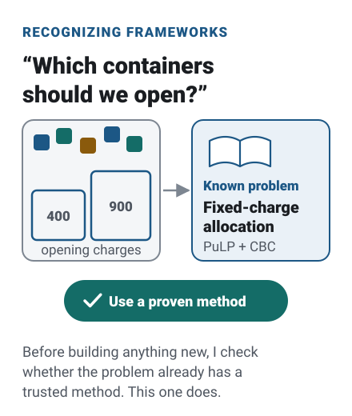
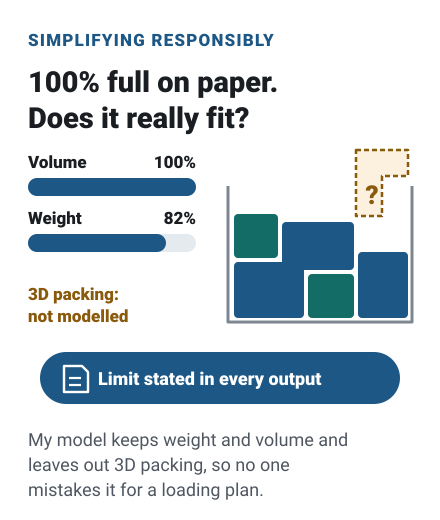
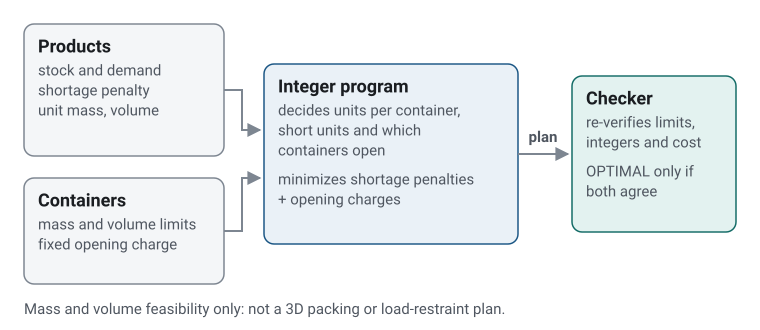

The situation
Opening a shipping container has a fixed cost. Sometimes leaving a few units behind is cheaper than paying for another container, and sometimes it isn’t, so the right answer depends on the numbers.
This project models that trade-off with four fictional products and two containers, and tests it under five scenarios, from normal capacity to no stock at all.
Where this comes from
I designed and directed AI-assisted development of a forklift restock recommendation capability covering demand forecasts, live demand and shipping-container utilization. The capability was integrated into the business platform and continues to be developed.
Three decisions that shape it
-
Use a proven method, not a rule of thumb.
Which containers to open, and what to put in them, is a known kind of problem: a fixed-charge allocation. Writing it as an integer program states the trade-off exactly and lets an established solver find the answer, instead of a hand-tuned rule.
Integer program; PuLP with the CBC solver; yes-or-no container decisions.

-
Say what the model leaves out.
The model checks weight and volume, not how boxes actually stack. A container can be 100% full by volume on paper and still not pack, so every output states that it is not a loading plan.
Mass and volume limits only; no 3D packing, stacking or load restraint.

-
Check the solver’s answer.
A solver can stop early or return values with tiny numerical errors. Separate code re-checks every plan against stock, demand, weight and volume and recomputes its cost. A plan is reported as OPTIMAL only when the solver reports an optimum and that check passes.
Independent
check_plan;FEASIBLEwhen there is no optimality proof.
The result
Across the five scenarios the model behaves as the trade-off predicts. With normal containers every unit ships; with small containers some demand goes unmet, and raising the shortage penalty ships more of it; with tiny penalties, shipping nothing is cheapest. Reruns in the same environment produce byte-identical output.
What I’d do next
Add a simple packing check for the containers the model chooses, which would mean adding the item dimensions the model doesn’t have yet.
Technical notes
- For every product, shipped units plus shortage equal demand, and shipments never exceed stock.
- The objective is shortage penalties plus fixed container charges, all in fictional
toy_cost_units. - A hand-checkable example in the README (five units, one container) has a unique optimum of 42, and the tests confirm it.
- A solver stop that returns a valid but unproven plan is labelled
FEASIBLE, notOPTIMAL; unit tests cover this status mapping, and an independent review checked real CBC time-limit stops. - 130 pytest tests; reruns in the same environment write byte-identical JSON (tested) and text output.
- PuLP is pinned to 3.3.2 because PuLP 4.2.0 failed in the tested environment.
A constrained allocation decision, checked independently

My role
I co-developed the original agent prompt kit for this project with AI assistance, and I provided the business context, project purpose and initial architecture outline. I set requirements, evaluation criteria, edge-case priorities and approval decisions.
I used a planner-and-builder AI workflow to produce the implementation and supporting documentation. AI tools performed the implementation work, while I remained responsible for the project's direction and final approvals.
During the first review round, I personally followed the project's run-and-check instructions in PowerShell and confirmed that the outputs matched the agents' reports. Later corrections and their regression results were verified by agents.
What I learned
I learned how product dimensions and container capacities change which allocations are feasible, and how shortage penalties influence whether opening another container is worthwhile. The exercise helped me distinguish a shipment-allocation decision from longer-term inventory strategy. Broader forecasting, inventory-policy and convex/nonconvex model-selection questions remain areas for further study.
Academic connections
These are conceptual connections to the reasoning described in Applied Thinking. They do not claim formal implementation of every theory.